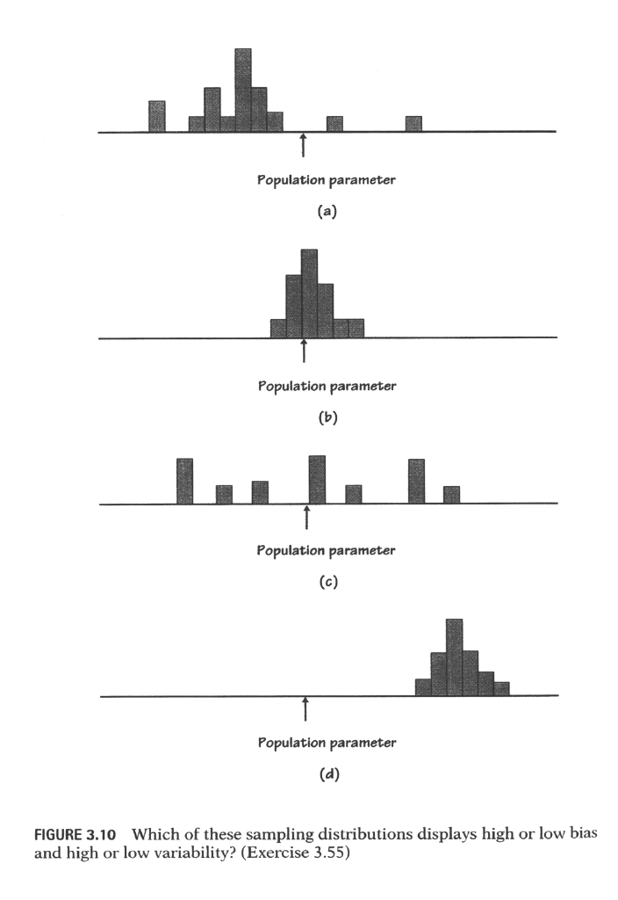
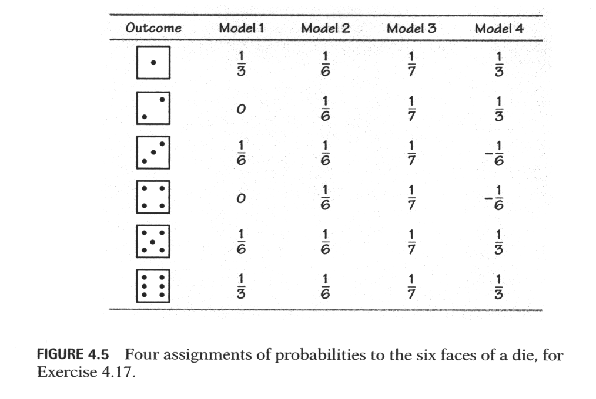

A. Should laws be passed to eliminate all possibilities of special interests giving huge sums of money to candidates?One of these questions drew 40% favoring banning contributions; the other drew 80% with this opinion. Which question produced the 40% and which got 80%? Explain why the results were so different. (W. Mitofsky, ``Mr. Perot, you're no pollster,'' New York Times, March 27, 1993.)
B. Should laws be passed to prohibit interest groups from contributing to campaigns, or do groups have a right to contribute to the candidates they support?
1. The government should confiscate our guns.(c) ``A national system of health insurance should be favored because it would provide health insurance for everyone and would reduce administrative costs.''
2. We have the right to keep and bear arms.''

| Blood type | O | A | B | AB |
| Probability | 0.49 | 0.27 | 0.20 | ? |

| Acres | < 10 | 10-49 | 50-99 | 100-179 | 180-499 | 500-999 | 1000-1999 | >= 2000 |
| Probability | 0.09 | 0.20 | 0.15 | 0.16 | 0.22 | 0.09 | 0.05 | 0.04 |
A = {The person chosen completed 4 years of college}Government data recorded in Table 2.14 on page 194 (from Edition 3 - see handout!) allow us to assign probabilities to these events.
B = {The person chosen is between 55 years old or older}
| Tests done? | |||
| Yes | No | ||
| Age under 65 | 0.321 | 0.124 | |
| Age 65 or over | 0.365 | 0.190 | |
| Subject | Sex | Mass | Rate | Subject | Sex | Mass | Rate | ||
| 1 | M | 62.0 | 1792 | 11 | F | 40.3 | 1189 | ||
| 2 | M | 62.9 | 1666 | 12 | F | 33.1 | 913 | ||
| 3 | F | 36.1 | 995 | 13 | M | 51.9 | 1460 | ||
| 4 | F | 54.6 | 1425 | 14 | F | 42.4 | 1124 | ||
| 5 | F | 48.5 | 1396 | 15 | F | 34.5 | 1052 | ||
| 6 | F | 42.0 | 1418 | 16 | F | 51.1 | 1347 | ||
| 7 | M | 47.4 | 1362 | 17 | F | 41.2 | 1204 | ||
| 8 | F | 50.6 | 1502 | 18 | M | 51.9 | 1867 | ||
| 9 | F | 42.0 | 1256 | 19 | M | 46.9 | 1439 | ||
| 10 | M | 48.7 | 1614 |
| Weeds | Corn | Weeds | Corn | Weeds | Corn | Weeds | Corn |
| per meter | yield | per meter | yield | per meter | yield | per meter | yield |
| 0 | 166.7 | 1 | 166.2 | 3 | 158.6 | 9 | 162.8 |
| 0 | 172.2 | 1 | 157.3 | 3 | 176.4 | 9 | 142.4 |
| 0 | 165.0 | 1 | 166.7 | 3 | 153.1 | 9 | 162.8 |
| 0 | 176.9 | 1 | 161.1 | 3 | 156.0 | 9 | 162.4 |